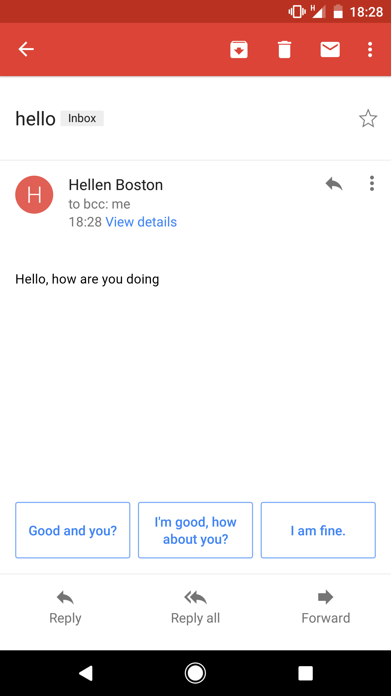
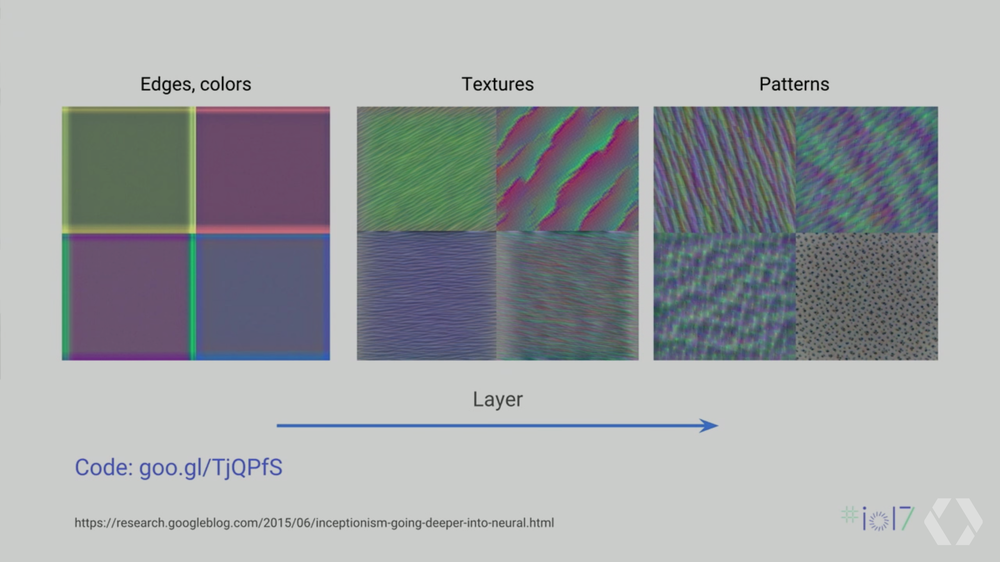
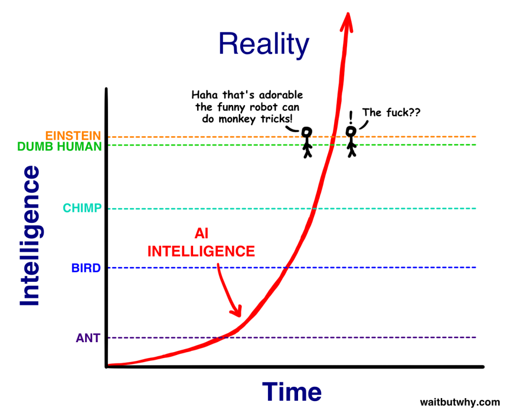
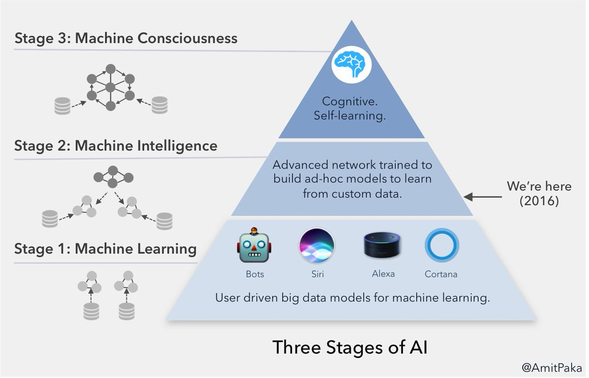

Can Machines think?
And can they be conscious?
Oliver Zeigermann / @DJCordhose
http://djcordhose.github.io/machine-learning-in-the-browser/2017_ai_ml_haw.html
- Watch TensorFlow Talks - https://youtu.be/OzAdKMPgUt4 - Deep Dream auf Azure bringen - Captchas nachtrainieren - https://codelabs.developers.google.com/codelabs/tensorflow-for-poets/index.html - https://codelabs.developers.google.com/codelabs/tensorflow-for-poets-2 - https://github.com/tensorflow/tensorflow/tree/master/tensorflow/examples/android - https://ci.tensorflow.org/view/Nightly/job/nightly-android/ - Show TF Stylize etc using Vysor
Olli
- Studied Computer Science (with an emphasis on AI) and Philosophy in the 90s - Failed to become a (high school) teacher in the 2000s - now reiterates on AI and ML
Schedule
Teil 1: Schwache KI - Digit Recognition zeigen - Captcha - Alles andere Teil 2: Starke KI -DeepDream
Part I: What is Intelligence?
Initial Exercise
How would you defined if a machine can think intelligently?
Example Definition: A machine leading a court trial and coming to a fair judgement
Can Machines really think?
- Weak AI hypothesis: it is sufficient to simulate thinking
- like in: birds do real flying, planes only simulate flying
- if something can not be differentiated from real thinking is the only objective for AI anyway (Turing test)
- Strong AI hypothesis: machines are only intelligent if they do the real thing
- is the machine really conscious like a human?
- poses the philosophically much more interesting questions
Turing said: if you ever experience an intelligent machine, such a distinction would not make more sense than asking if the other people do real thinking either
What does Yann LeCun - one of the fathers of modern AI - think about this?
Prediction is the essence of intelligence.
Differentiation is the essence of learning.
https://www.facebook.com/yann.lecun/posts/10154442711667143Part II: Weak AI
Where to machines enter domains thought of as genuine to humans a few years ago?
Recognizing Digits
- Show MNIST example from Java - Add Screenshot from Java Talk
Machine Understands and Reacts Like a Human
Playing Go
https://www.tastehit.com/blog/google-deepmind-alphago-how-it-works/Recognizing Scribbles
https://quickdraw.withgoogle.com/Can an image Captcha tell a machine from a human?
Add Captchas herePart III: Understanding Deep Neural Networks
Getting a bit more technical
Feature Channels in DNNs

Open Source TensorFlow Models (Google I/O '17)
https://github.com/random-forests/tensorflow-workshop/blob/master/extras/deep_dream.ipynb
- von 2017_schule klauen - tensorflow playground zeigen, dazu auch Aufgabe geben
Part IV: Strong AI
What do experts think where we are - 2015

http://waitbutwhy.com/2015/01/artificial-intelligence-revolution-1.html
http://waitbutwhy.com/2015/01/artificial-intelligence-revolution-2.html
What do experts think where we are - 2016
But will there ever be truly intelligent machines at all?
Do we still understand the machines we build?
https://backchannel.com/our-machines-now-have-knowledge-well-never-understand-857a479dcc0e
https://futurism.com/googles-new-ai-is-better-at-creating-ai-than-the-companys-engineers/
Even stronger: Do we really still build those machines?
Or rather are they build by the data (e.g. pictures) of the world we feed them?
Would we say, we have built our kids?
https://twitter.com/fchollet/status/849076312853663744?s=09
The most remarkable thing about the brain is that it wasn't designed. As a result, how the brain works is largely an irrelevant question.
Essentially: it doesn't matter what the answer is, bc one can mechanically derive it once the question has been asked. What matters is the Q
Can machines be creative?
Can they create something genuinely new?
One of the strangest things about thinking is our ability to create new thoughts, beyond what we can experience, by combining known concepts. This is where cognition departs from mere pattern recognition and become an abstraction machine.
https://twitter.com/fchollet/status/863494785734029312?s=03
- Color Names: https://twitter.com/tsullivanphoto/status/865753799729786881?s=03 - Metal Band Names: https://twitter.com/JanelleCShane/status/861243170084007937?s=03 - Creating Movies: https://twitter.com/dh7net/status/861334725750816768?s=03 - Creating worlds: https://www.youtube.com/watch?v=SwRV5422uKI
Can machines create Art?
- https://twitter.com/mtyka/status/866192961960202244?s=03 - https://twitter.com/mtyka/status/866199274119241732
Can machines dream?
- https://github.com/tensorflow/tensorflow/tree/master/tensorflow/examples/tutorials/deepdream - http://localhost:8888/notebooks/deepdream.ipynb
Can machines hallucinate?
- https://github.com/tensorflow/tensorflow/tree/master/tensorflow/examples/tutorials/deepdream - http://localhost:8888/notebooks/deepdream.ipynb - https://www.youtube.com/watch?v=lkpe5njSiJk
Can machines be conscious?
What makes us conscious? https://theconversation.com/what-makes-us-conscious-50011
Integrated Information Theory postulates physical system can give rise to consciousness if it is
- very rich in information (like brain and SSD)
- highly integrated (data is highly connected in complex ways)
Should be able to distinguish awake and anaesthetised brains (http://journals.sagepub.com/doi/abs/10.1177/1550059413513723)
Might consciousness something not restricted to living things? https://www.scientificamerican.com/article/is-consciousness-universal/
Does this have a conscience?